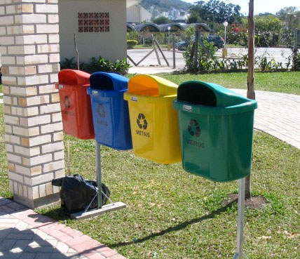
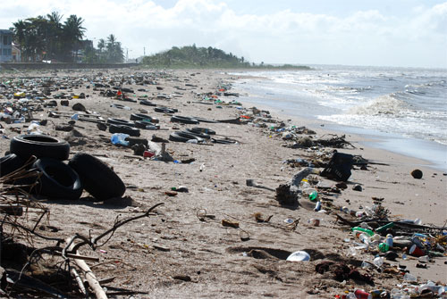

Sesión 9
Inicio
En 1972 se realizó en Estocolmo la primera Conferencia de las Naciones Unidas sobre el Medio Ambiente, en la que participaron 113 países.
Lee con atención el siguiente texto:
La influencia humana en los cambios ambientales es innegable. Al igual que las otras especies habitantes del planeta, los humanos estamos regidos por las leyes y ciclos de la naturaleza, el uso que hacemos de ella es diferente.
Desde que el hombre comenzó a aprovechar su inteligencia sobre el instinto para sobrevivir se situó en una posición de dominio ante los demás seres vivos, causando un paulatino impacto en los ecosistemas.
Por ello, diversos especialistas, organizaciones gubernamentales, no gubernamentales, países y científicos se han reunido año con año para buscar juntos estrategias para cuidar, restaurar y proteger nuestro medio ambiente.

Pulsa las imágenes de la siguiente línea del tiempo, al hacerlo aparecerá información acerca del Desarrollo Sustentable.
Desarrollo
Después de haber revisado la línea del tiempo sobre el desarrollo sustentable, lee detenidamente la siguiente información:
De las palabras a la acción
Diez años después de la Cumbre de Río, diferentes comisiones de la ONU evaluaron, a partir de las estadísticas económicas, sociales y medioambientales mundiales, las metas propuestas y logros alcanzados por los países participantes de la cumbre en torno al tema del desarrollo sostenible.
Sin embargo, los resultados fueron poco alentadores, ya que varios de los puntos acordados quedaron solo en el papel y muy pocas naciones integraron a sus políticas el cuidado, manejo medioambiental y la educación de la población en torno al crecimiento social y económico.
En un informe elaborado por el Secretario de la ONU de ese entonces, Koffi Annan, se señalaba que el medio ambiente a nivel mundial continuaba siendo vulnerable y que la degradación de los ecosistemas parecía no tener retroceso.

En parejas contesten en su cuaderno las siguientes preguntas:
- Desde enero de 1968 ¿Cuántas reuniones son las que se han llevado a cabo para cuidar nuestro medio ambiente?
- ¿Qué sucede en la Cumbre de Bali?
- ¿Cuál crees que sea la o las razones por las que Estados Unidos y China no firman el Protocolo de Kioto?
- ¿Crees que se han cumplido los objetivos de las diferentes reuniones? ¿Por qué?
Realiza la siguiente actividad.
Cierre
Observa atentamente el video titulado: “Así está la cosa: Protocolo de Kioto”.
Para finalizar, en grupo realicen una reflexión acerca del video y anótenla en su cuaderno.